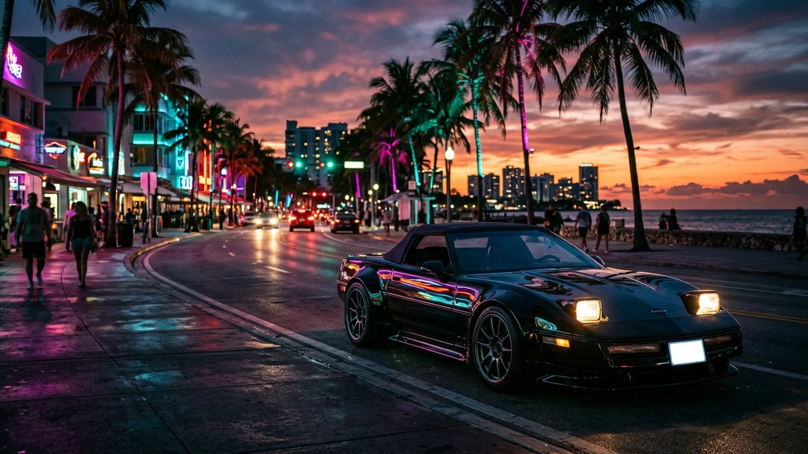
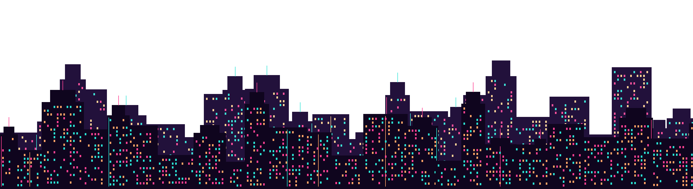
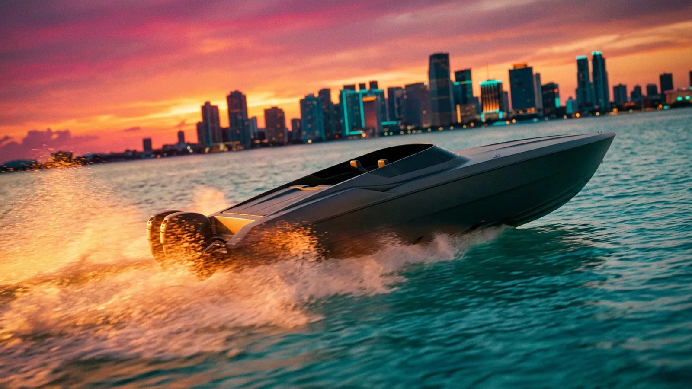
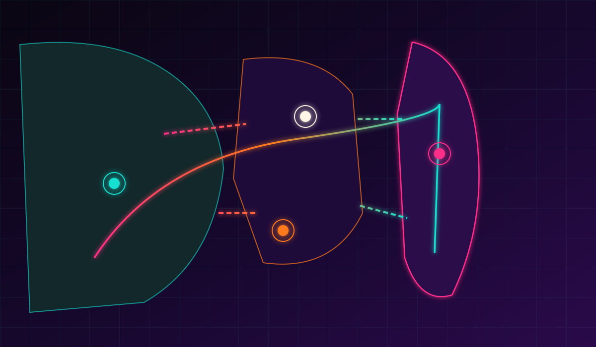
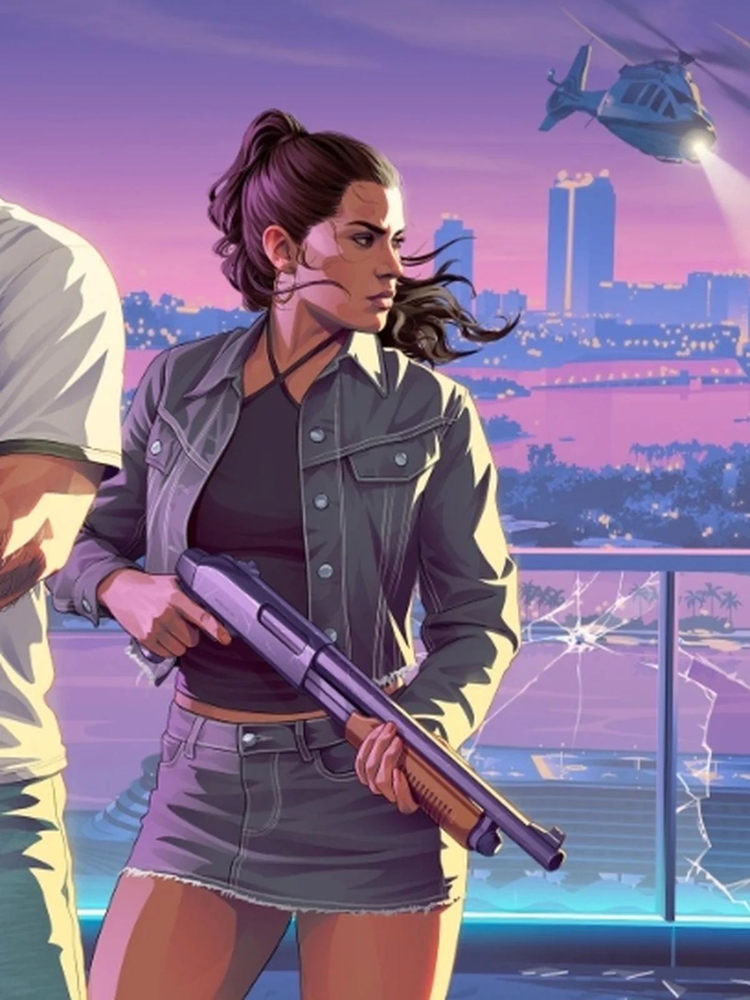
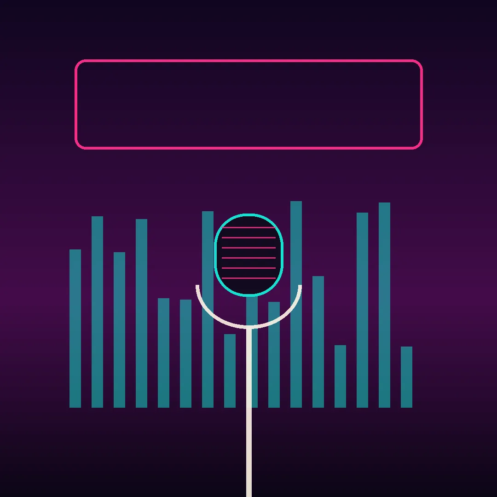

01
Explore no seu ritmo
Observe a transição entre dia e noite nas diferentes regiões costeiras e planeje seus deslocamentos antes de entrar em áreas movimentadas.


A espera acabou · Bem-vindo a Leonida
Já disponível para PlayStation 5 e Xbox Series X|S
Imagens conceituais geradas por IA / Ilustração procedural · Projeto de fã
Experimente a atmosfera tropical e o ritmo implacável das ruas sob o pôr do sol.
As portas de Vice City já estão abertas. Entre avenidas banhadas em neon, pântanos enevoados e docas iluminadas por vapor de sódio, Lucia e Jason enfrentam o preço de cada escolha em uma jornada onde confiança é o recurso mais raro.
Dicas gerais de sobrevivência e exploração para os primeiros passos — 100% livre de spoilers. (VERIFICAR NA FONTE OFICIAL)

Observe a transição entre dia e noite nas diferentes regiões costeiras e planeje seus deslocamentos antes de entrar em áreas movimentadas.

De conversíveis clássicos no asfalto molhado a lanchas velozes nos canais, ajuste sua rota ao terreno e às condições climáticas.
As estações locais e os sons da cidade ajudam a perceber mudanças de clima e movimento nos bairros ao redor.
Aproveite a luz dourada do entardecer e os reflexos de neon à meia-noite para capturar composições cinematográficas.
Role para atravessar as regiões e acompanhar o ciclo do entardecer à madrugada.


Calçadão art déco à beira-mar, letreiros magenta refletidos no asfalto úmido e conversíveis desfilando sob as palmeiras.

Águas paradas sob a neblina do amanhecer, rotas ocultas entre manguezais, aerobarcos e vida selvagem atenta.

Guindastes monumentais, pátios de contêineres sob luz de sódio e docas industriais que nunca dormem.

Cânions de vidro e concreto, rastros de faróis no trânsito noturno e vapor subindo das galerias subterrâneas.
Lucia e Jason — artes promocionais oficiais (© Rockstar Games / Take-Two Interactive, uso não comercial de fã).

“A cidade inteira brilha como promessa, mas só fica de pé quem sabe ler a sombra.”
Teste os filtros visuais em tempo real e clique em qualquer captura para abrir no lightbox com zoom.
Sintetizador Web Audio API com equalizador em tempo real. Áudio 100% livre de direitos (CC0), iniciado mudo.

Áudio desligado (clique em Ligar som para ouvir o synth procedural)
Linha do tempo ilustrativa pós-lançamento. Conteúdo marcado como placeholder — verifique notas oficiais da Rockstar Games.
Grand Theft Auto VI chega oficialmente ao PlayStation 5 e Xbox Series X|S. (VERIFICAR DETALHES NA FONTE OFICIAL)
Placeholder para futuras notas de versão e melhorias técnicas divulgadas pelos canais oficiais.
Placeholder para novidades de comunidade e conteúdos futuros confirmados pelo estúdio.
PlayStation 5 · Xbox Series X|S
Disponível para PlayStation 5 e Xbox Series X|S. Consulte os canais oficiais para outras plataformas.
Receba novidades e atualizações deste projeto conceitual e conecte-se com outros fãs.
Inscrição confirmada! Você receberá novidades e atualizações em breve.
Você pode adquirir o jogo nas lojas oficiais PlayStation Store (PS5) e Microsoft Store (Xbox Series X|S) ou em revendedores autorizados. Os botões 'Jogar agora' nesta página apontam para links configuráveis em js/config.js (VERIFICAR NA FONTE OFICIAL).
O jogo está disponível para PlayStation 5 e Xbox Series X|S. Informações sobre outras plataformas devem ser verificadas diretamente nos canais oficiais da Rockstar Games.
Qualquer anúncio sobre atualizações, patches ou conteúdos adicionais é publicado exclusivamente pela Rockstar Games em seu site e Newswire oficial. A seção Novidades desta página contém apenas exemplos marcados como placeholder.
Não. Este é um projeto conceitual de fã, sem fins lucrativos e sem nenhuma afiliação com a Rockstar Games ou Take-Two Interactive. Todas as imagens são originais, geradas por IA / ilustração procedural, sem rostos reais e sem marcas oficiais.